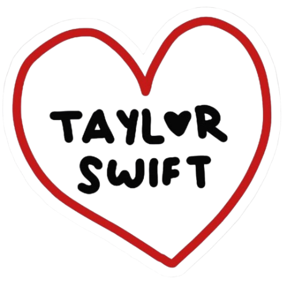

 Sobre Taylor Swift
Taylor Alison Swift (Reading, 13 de dezembro de 1989) é uma
cantora, compositora, produtora musical, diretora e empresária
americana. Conhecida por suas composições narrativas que
geralmente concentram-se em sua vida pessoal, ao qual recebem
ampla cobertura midiática. Nascida em West Reading, Pensilvânia,
Swift mudou-se para Nashville, Tennessee, aos 14 anos, para seguir
uma carreira na música country. No mesmo período, ela assinou
contrato com a Sony/ATV Music Publishing e em 2005 com a gravadora
Big Machine Records, que lançou seus dois primeiros álbuns, o
homônimo (2006) e Fearless (2008). Esse último, certificado de
diamante nos Estados Unidos, foi o primeiro de todos os seus
discos seguintes a alcançar o topo da Billboard 200. Seus
lançamentos posteriores, Speak Now (2010), Red (2012), 1989 (2014)
e Reputation (2017) venderam — cada um —, mais de um milhão de
cópias em suas semanas de estreia em terras estadunidenses,
tornando Swift a primeira artista na história a realizar esse
feito. Os três últimos citados recalibraram sua imagem do country
para a música pop.
Este portfólio é um espaço para celebrar sua trajetória brilhante
e compartilhar minha admiração por sua arte.